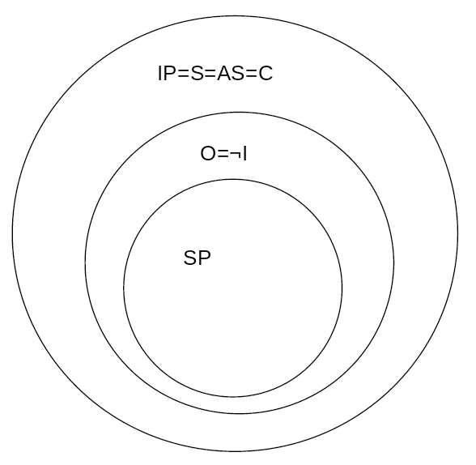

author: niplav, created: 2019-08-15, modified: 2020-04-28, language: english, status: notes, importance: 3, confidence: theory
Many people have very different conceptions on how to think about consciousness, intelligence, sentience and information processing. A method of visualizing these conceptions is presented, some examples are discussed and advantages and disadvantages are shown.
When talking about minds, what they contain, entail and are made of, there are many differing ideas and models that different people have thought about. However, it can often be very difficult to make meaningful progress in that area, since people often conflate one or more properties that minds can have with one another, don't use terms clearly or equate terms that under closer inspection have nothing to do with each other.
One possible method to clear this confusion could be to establish broad definitions for different aspects of minds, and make diagrams that represent the relation of these different aspects.
This text uses Venn diagram-like diagrams to visualize these different conceptions, but adds notation to indicate that classes are meaningless or equal (or both).
Terms (short, and only gesturing towards a definition):
Complex internal state, responding to stimuli, processes information (duh!).
Example: Computer
Counter-example: A rock
Optimizes towards a given goal.
Example: Evolution, Paperclip-maximizer
Counter-example: A piece of paper
Internal model of the world, optimizes towards a goal, makes plans and executes them.
Example: Adult human, artificial intelligence
Counter-example: A tree
Can experience qualia, such as the color red.
Sentience is the capacity to feel, perceive, or experience subjectively.
— Wikipedia, “Sentience”, 2019
Example: Myself
Counter-example: P-Zombie
Can experience valenced qualia (qualia that are good/bad).
Example: Presumably most humans
Counter-example: An electron
Has internal self-model, passes mirror test (or similar test), can distinguish "world" and "self"
Example: Myself
Counter-example: P-Zombie
Possesses "wisdom" and "insight", think "a good human person"
[…] sapience […] is the ability to think and act using knowledge, experience, understanding, common sense and insight.
Example: Lao-Tse
Counter-Example: A golden retriever
Similar to Venn diagrams, a class is generally represented by a circle or an ellipse that represents all minds that have that property. To differentiate the classes, the circle contains the abbreviation of the name of the class.
If a class doesn't mean anything, it can be written as in the class it collapses into. If no such class exists, it can be written outside of all classes, also as .
If two classes and are equal (all minds with one property necessarily have another property), they can be written inside the same circle as .
Model in which all information-processing systems are sentient, conscious, affectively sentient, and where some information processing systems are optimizing (intelligence meaning the same thing as optimizing). Some of the optimizing systems are also sapient.

Another way of looking at consciousness: Intelligent and sentient systems are both information processing systems, but not necessarily the same, every conscious system is sentient, just as every affectively sentient system, and every sapient system is both intelligent, conscious and affectively sentient. Also, not every information-processing system is sentient or intelligent.